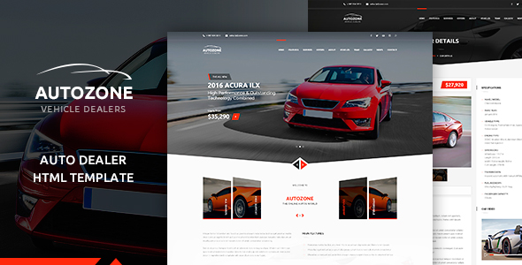

Thank you for purchasing this item. We provide support for all of our Items at http://templines.com/, but please make sure you read this documentation first. Thank you so much!
If you are not familiar with HTML and CSS, I highly recommend that you to hire a specialist. It will save your time and you will get only positive emotions while using our product.
Let's look at the structure of Landing Page. It includes its own sections with content. On request you can add or remove sections of the site. Please, be careful when removing unwanted sections. It can cause errors in custom.js. All tags have to be closed properly.
CONTENT
CONTENT
CONTENT
section with background color
CONTENT
Color switcher
Choose a color scheme. Paste this code in HEAD
Page preloading effect
It effect makes waiting process while page loading less boring for the user. Please just use this code .
Main Styles and Scripts
Master Styles
assets/css/master.css
Global Theme Styles
assets/css/theme.css
Blog Styles
assets/css/blog.css
Responsive Styles
assets/css/responsive.css
Section Styles
assets/css/sections.css
Sidebar Styles
assets/css/sidebar.css
Theme js
assets/js/custom.js
Icons Fonts
assets/fonts/autoicon
assets/ fonts/flaticon
assets/ fonts/font-awesome
assets/ fonts/simple
Changelogs
Changelogs file changelog.txt